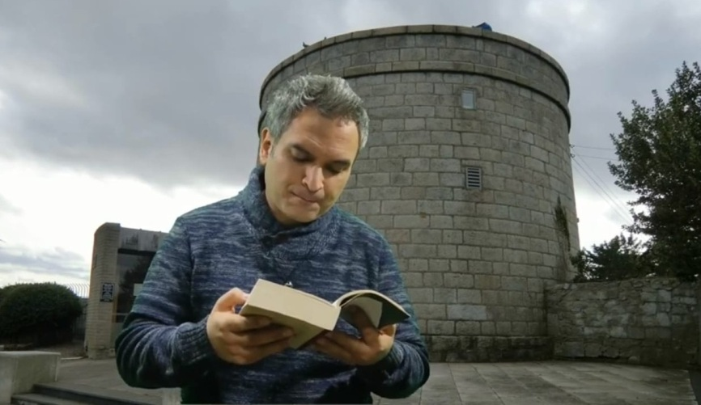

Escribir sobre mi experiencia de haber participado en el Seminario de Estudios Irlandeses de la UNLa (2025), despliega en mi mente un cúmulo de impresiones: bajo la atenta guía de dos docentes de la calidez de Mónica Cuello y Diego Domínguez. Además, una pléyade de compañeros apasionados por el Trébol y el Arpa; pero, toda experiencia puede detonar en reflexiones.
Indagar sobre la historia de Irlanda puede aparentar ser una serie de acontecimientos ajenos al interés del ancho mundo, mas no lo es, sus efectos son más o menos universales y el factor celta ha gravitado en nuestro inconsciente humano. Es así, como al ir avanzando en las clases del Seminario, pude ir indagando en los hitos relevantes que han ido amalgamando el acontecer del pueblo irlandés: trazos protohistóricos, cosmovisión y leyendas celtas y mitos. La injerencia imperialista de Inglaterra, con el consabido sometimiento de hombres y mujeres, que sufrieron la denostación de su condición humana, además del profundo sesgo religioso que dividió la isla. Las plantaciones de colonos favorecidos por las políticas imperialistas que provocaron la pérdida de los espacios territoriales, psicológicos y espirituales, de familias lanzadas hacia el hacinamiento y el flagelo. Y como asalto final, el intento de avasallar la última riqueza: un lenguaje no dominado, de la mano de atropellos necesarios que pusieron en jaque la pervivencia de una etnia a medida que se desarrollaba el plan del invasor, destruyendo así una cosmovisión ancestral de contemplación de la realidad natural, para ser trasmutada por un lenguaje que prioriza la raza superior (¿Raza?): lógica civilizadora de un análisis racional que puede convertir a un imperio en asesinos genocidas. ¿Podemos estar aquí ante una tragedia eco-lingüística? ¿Quién sabe? Pero en mi ser diletante, crece el anhelo por la búsqueda de esos silenciosos espacios del lenguaje en comulgación con lo mistérico: un vital impulso hacia un respetuoso acto de la convivencia en comunidad donde el lenguaje se vuelve rito, estableciendo así el hito lingüístico como proceso de identidad social e individual, amparado a la luz de la tradición y de la simbolización de la experiencia. Pero, que, en época de guerras genocidas, deja al lenguaje pululando como un cadáver ante el lenguaje dominante: del conquistador, que busca dar una nueva luz a los pueblos sometidos. Reflexión que quedaba dando vueltas por mi cabeza al finalizar algunas clases del seminario. No obstante, La Gran Hambruna, visceral hecho histórico, aún sigue socavando hondo el alma de Erín. Dejó profundas impresiones en mi fuero interno, además de imágenes que retenían mí aliento, y que ahora, encapsulan cualquier palabra que puedan gatillar mis dedos sobre el inerte teclado. Sin embargo, como contrapunto al desaliento, las clases sobre los mitos y leyendas celtas a cargo de Diego Domínguez, abrieron el cofre de mis recuerdos, y la fascinación desde mi ya lejana época juvenil por los cuentos y libros sobre la mitología celta. El mundo de los Druidas exalta la imaginación a cualquiera. Así como también, la inolvidable clase dedicada a la música Celta, con un grupo de músicos que compartieron sus conocimientos sobre la historia de los instrumentos tradicionales, interpretando piezas musicales que, a pesar de algunas interferencias técnicas en la transmisión por zoom, hizo las delicias de todos.
La conformación temática del Seminario me permitió ir conociendo en profundidad la historia social y política de Irlanda, ya que mis conocimientos sobre el país del trébol se enarbolaban a través de su mitología y su posterior cristianización supeditada a la figura de San Patricio, y a la labor ejercida por los monjes celtas irlandeses en el apostolado misionero y preservación de textos narrativos a la luz del sincretismo. Irlanda convertida en un fuerte bastión del catolicismo. ¿Y cómo no? La literatura, bajo la sombra de los cuatro jinetes del apocalipsis irlandés: Wilde, Yeats, Joyce y Beckett, plasmado en una revolución cultural que todo pueblo necesita para levantar la mirada, apretar el puño y soñar la libertad de una tierra avasallada, pero fuertemente amparada en la tradición y sus símbolos, en la resiliencia de la fe y en el poder de su lengua ancestral. El factor celta siempre está presente.
Y es así, como en el desarrollo de las clases, los profesores entregaban un amplio espacio al diálogo, donde la simbiosis daba paso a las sinapsis, y el común denominador en varios comentarios de los compañeros: el gaélico irlandés. Es por eso que para finalizar, ¡Sí…! Un extracto del Ulises de James Joyce (Capitulo 2, traducción de José María Valverde), y reza:
–¡Hay que ver! –dijo ella.
Stephen escuchaba en desdeñoso silencio. Ella inclina su cabeza hacia una voz que le habla ruidosamente, su arreglahuesos, su curandero: a mí, ella me desprecia. A la voz que confesará y ungirá para la tumba todo lo que haya de ella, excepto sus impuros lomos de mujer, de carne de hombre no hecha a semejanza de Dios, la presa de la serpiente. Y a la ruidosa voz que ahora la manda a callar, con asombrados ojos inquietos.
–¿Entiende usted lo que le dice éste? –le preguntó Stephen.
–¿Es francés lo que usted habla señor? –dijo la vieja a Haines. Haines volvió a dirigirle un discurso más largo, confiado.
–Irlandés –dijo Buck Mulligan–. ¿Sabe usted algo de gaélico?
–Me pareció que era irlandés –dijo ella–, por el sonido que tiene. ¿Es usted del oeste señor?
–Soy inglés –contestó Haines.
–Es inglés –dijo Buck Mulligan– y cree que en Irlanda deberíamos hablar irlandés.
–Claro que deberíamos –dijo la vieja–, y a mí me da vergüenza no hablar yo misma esa lengua. Me han dicho quienes la saben que es una lengua de mucha grandeza.
Sobre el autor

Juan Silva Rojas apasionado de la literatura y de la mitología y religiones comparadas, viajante empedernido por las narraciones universales y de la poética inherente a los trazos vinculantes del ser humano con lo Divino. Nacido en la ciudad Viña del Mar, pero después adoptado por el alma mater de Valparaíso. Gran parte de su vida dedicada a los libros, ejerciendo labores en distintas áreas del mundo editorial. Hoy en día establecido como editor independiente, gestionando proyectos literarios y de difusión que acerquen al público a los fondos de la lectura, tan necesaria para que los pueblos se sanen de sus frustraciones y se instale el diálogo y la empatía, como vuelta de tuerca a las revoluciones de la violencia.